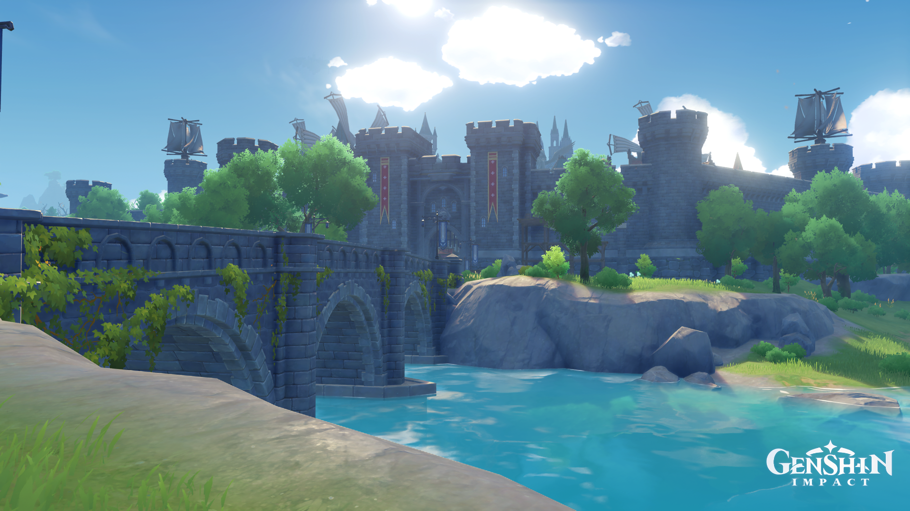
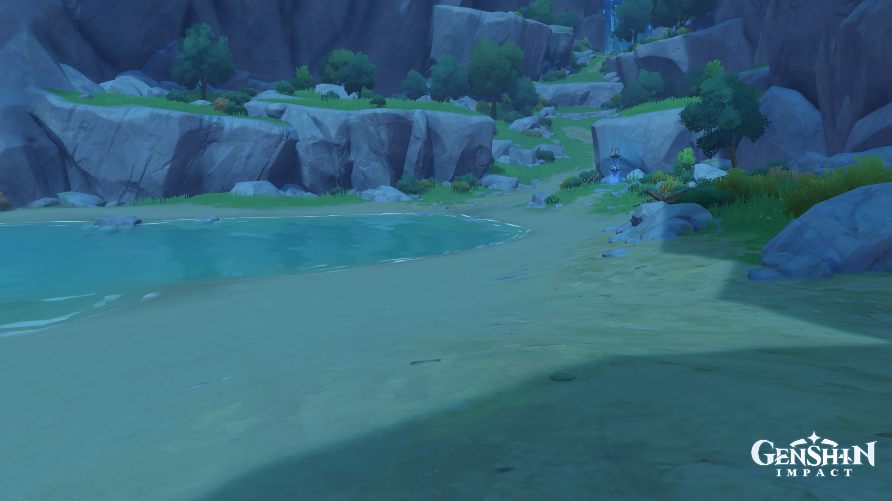

GENSHIN IMPACT
Genshin Impact jest to gra komputerowa, utworzona przez miHoyo, z otwartym światem, i z zaawansowanym systemem walki. Jest ona zlokalizowana w fikcyjnym świecie Teyvat, gdzie gracze grają podróżnikiem, który chce odnaleźć swojego zaginionego bliźnakia. Gracz wykorzystuje wszystkie 7 żywiołów by poruszać się po świecie, walczyć z przeciwnikami i rozwiązywać zagadki, i rozbudowywać swoją drużyne o inne postacie.

Pierwsze miasto które gracz odwiedza

Plaża, na której gracz zaczyna grę i poznaje swojego towarzysza, Paimon